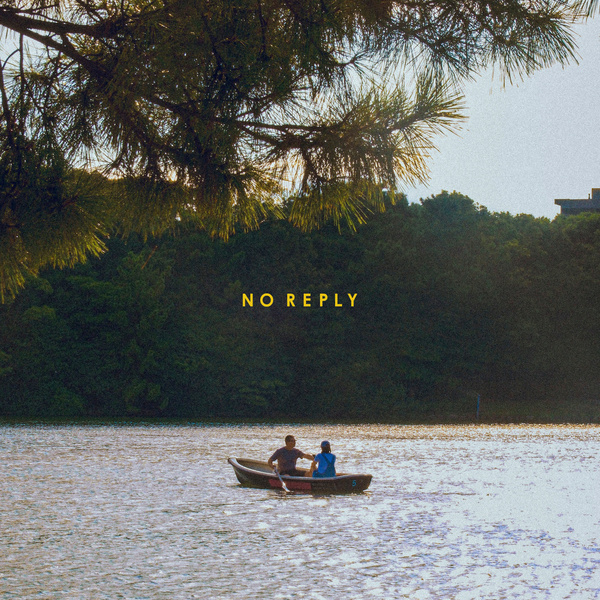
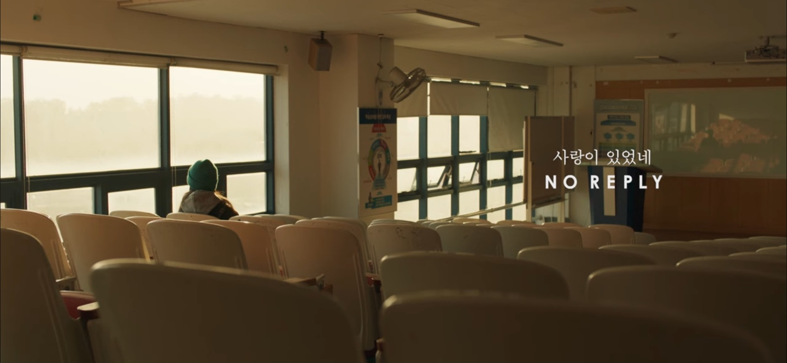
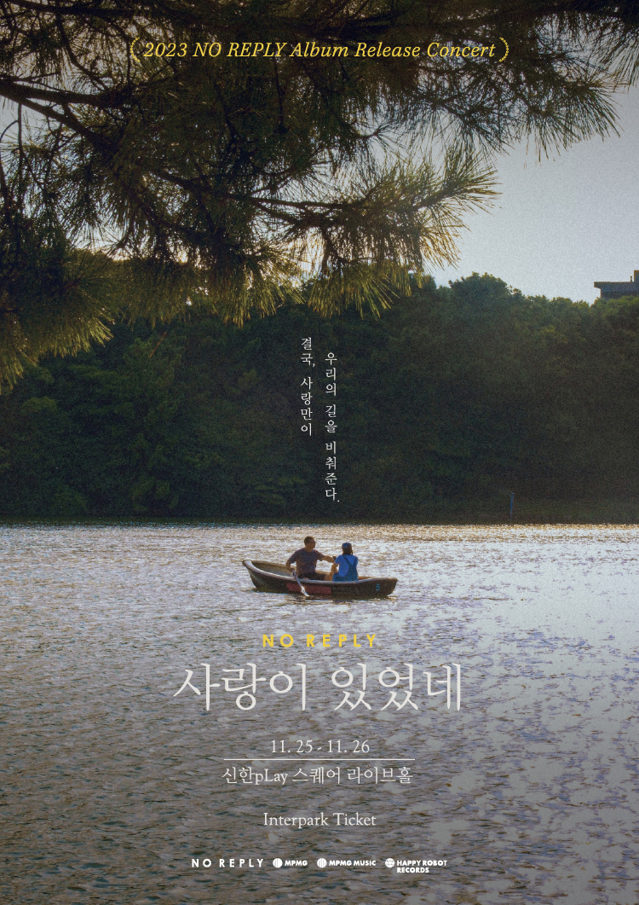

안녕하세요 한스입니다.
영화 믿을 수 있는 사람과 콜라보로 진행된 노리플라이의 노래 사랑이 있었네를 소개해드리겠습니다. 이번 노래의 뮤비는 영화 믿을 수 있는 사람 과의 콜라보로 제작되었습니다.

노리플라이 (no reply) - 사랑이 있었네
Release Note
#노리플라이 #noreply #권순관
? ????? ?????
노리플라이 (no reply) EP [사랑이 있었네]
타이틀 곡 사랑이 있었네 뮤직비디오는
영화 믿을 수 있는 사람 과의 콜라보를 통해 제작되었습니다.
-
삶을 비추는 무수한 사랑에 대하여
노리플라이 (no reply) EP [사랑이 있었네]
지금 바로 모든 음원 사이트에서 감상하실 수 있습니다.
no reply NEW EP '?? ??? ????' is OUT NOW
-
Music Video from Movie 믿을 수 있는 사람
Film Director 곽은미 KWAK Eun-mi
Distributed by 찬란 Challan
Edited by 김경환 Kim Kyounghwan MPMG Creative
#노리플라이 #noreply
#권순관 #정욱재
#EP #발매 #사랑이있었네 #itwaslove
#영화 #믿을수있는사람
영화 믿을 수 있는 사람 시놉시스
“안녕하세요, 제 이름은 박한영입니다.
성의를 다해 가이드할 테니, 저를 믿으시고 즐겁게 보내시기 바랍니다”
눈 뜨고 코 베인다는 서울에서, 안락한 정착을 꿈꾸는 20대 한영.
관광통역안내사 자격증을 취득 후, 이제 정말 돈만 벌면 될 줄 알았는데...
중국 여행객을 상대로 한 가이드 업무는 마음 같지 않고,
심지어 유일하게 의지했던 친구 정미마저 서울살이 청산을 선언한다.
열심히 살아도 마음 같지 않은 서울살이, 이대로 끝…?
당신의 여행은 제가 가이드할게요,
그런데... 제 인생은 누가 가이드해 주죠?
영화 믿을 수 있는 사람은 중국인 관광객 상대로 통역을 하는 주인공 한영을 통해 탈북자의 애환을 담은 독립영화입니다. 주인공 한영역의 배우 이설은 어디서 많이 봤다 했는데, 김동률 노래 답장에서 여주인공이었네요.
노리플라이 (no reply) - 사랑이 있었네 가사
지나치는 계절 속에
빈 하늘을 바라볼 때
한숨 섞인 노래 속에
사랑이 있었네
허전한 손을 만질 때
먼지 섞인 길을 갈 때
가만히 말을 잃을 때
사랑이 있었네
아무것도 설명할 수 없고
아무것도 이해되지 않아도
놓쳐버렸던 그 꿈들로
적당히 밤을 채워 가
누군가를 기다릴 때
웅성이던 인파 속에
일부러 길을 헤맬 때
사랑이 있었네
아무것도 설명할 수 없고
아무것도 이해되지 않아도
놓쳐버렸던 그 꿈들로
적당히 밤을 채워가
어디쯤 흘러온 걸까
어디쯤 놓쳐버렸나
어딘가 손 내밀려 해봐도
끝내 그 손을 놓쳤네
어디쯤 흘러온 걸까
어디쯤 놓쳐버린 걸까
어딘가 떨쳐내려 해봐도
두 손 꼭 쥐고 살아왔네
햇살 가득 들어온 방
가보지 못한 여행지
다시 길을 걸어갈 때
사랑이 있었네
사랑이 있었네

노리플라이 (no reply) - 사랑이 있었네 감상 후기
노리플라이 특유의 맑은 음악으로 풀어낸 사랑에 대한 생각이 담긴 이번 노래는, 제가 가장 좋아하는 노리플라이의 노래 그대 걷던 길의 느낌과 최근의 분위기가 아련한 사랑의 기분을 전달하고 있습니다. 영어 타이틀인 It was love 문장을 보고 누구나 한번쯤 있었던 옛사랑의 기억을 떠올리게 했습니다. 영화 믿을 수 있는 사람과 콜라보한 영상에서는 탈북자 한영(이설)의 서울 살이를 보여줍니다. 우리가 지나왔던 곳 어디에나 사랑이 있었음을 생각하게 되는 노래였습니다.

이번 싱글 앨범에서는 이 노래뿐만 아니라, 이전에 발표했던 노래 2곡을 포함 5곡이 수록되었습니다.
1. 반짝이고 있어
2. 사랑이 있었네
3. 랑데뷰
4. 곁에 있을게 (feat. 예빛)
5. Polar night
노리플라이 공연 사랑이 있었네 (It was love)’
이번 앨범 발표와 함께 2023년 11월 25일 노리플라이의 공연도 진행되었습니다.

인터
파크 티켓
tickets.interpark.com
우리 곁에 있던 사랑을 다시 되돌아 볼 수 있는 노래 노리플라이의 사랑이 있었네 추천드립니다.